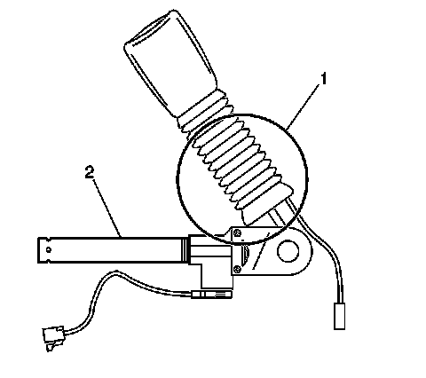
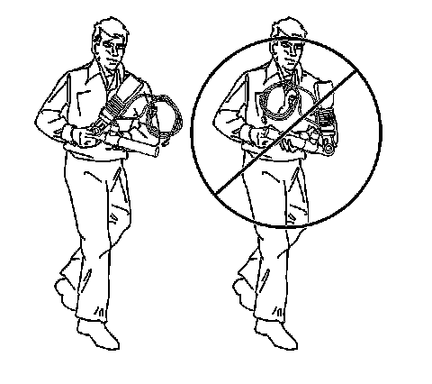
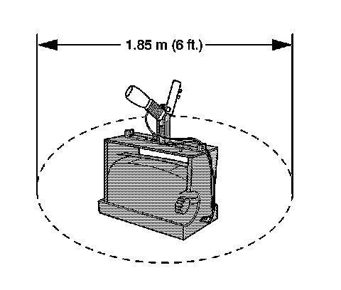
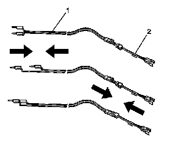
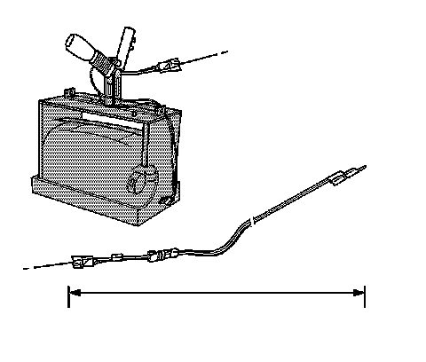
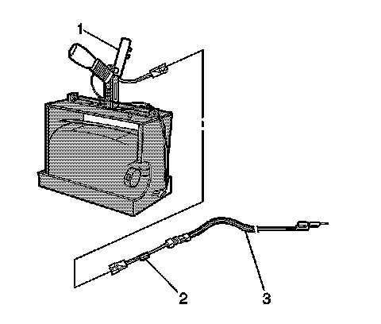
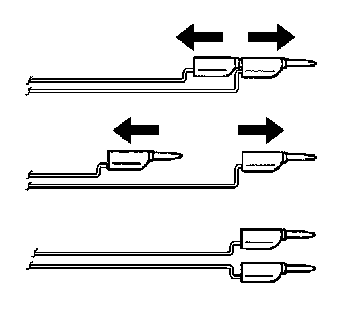
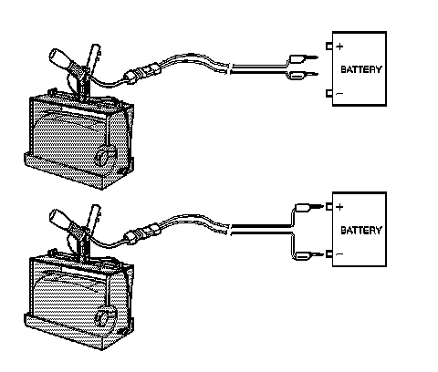
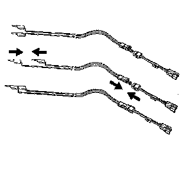

Procedures
Pretensioner Handling and Scrapping

CAUTION: When you are carrying an undeployed seat belt pretensioner:
* Do not carry the seat belt pretensioner by the wires or connector on the pretensioner.
* Do not touch the seat belt pretensioner in the area of the cable (1).
* Do not cover the tube opening with your hand.
* Keep the open end of the tube pointed away from you. Do not point the open end of the tube at another person.
* When the pretensioner deploys the cable retracts. This shortens the pretensioner between the buckle and the mounting bolt. Grasp the pretensioner by the piston tube (2).
Disregarding these precautions may result in personal injury or unnecessary SIR system repairs.
Scrapping Procedure
During the course of a vehicle's useful life, certain situations may arise which will necessitate the disposal of a live (undeployed) pretensioner. The following information covers the proper procedures for the disposing of a live (undeployed) pretensioner. Deploy the pretensioner before disposal. Do not dispose of a live (undeployed) pretensioner through normal disposal channels until the pretensioner has been deployed. The following information covers the proper procedures for the disposing of a live (undeployed) pretensioner.
* After replacement of a pretensioner under warranty. The pretensioner may need to be returned undeployed to the original manufacturer of pretensioner.
* If the vehicle is the subject of a Product Liability report related to the SIR system and is subject to a Preliminary Investigation (GM-1241). Do not alter the SIR system in any manner.
* If the vehicle is involved in a campaign affecting the pretensioners. Follow the instructions in the Campaign Service Bulletin for proper SIR handling procedures.
Deployment Procedures
The pretensioner can be deployed inside or outside of the vehicle. The method used depends upon the final disposition of the vehicle. Review the following procedures in order to determine which will work best in a given situation.
Deployment Inside the Vehicle
Refer to Inflator Module Handling and Scrapping (Service and Repair) for deploying the pretensioner inside vehicle under Vehicle Scrapping Procedure.
Deployment Outside Vehicle for Seat Belt Pretensioners
Deploy the seat belt pretensioners outside of the vehicle when the vehicle will be returned to service. Situations that require deployment outside of the vehicle include the following:
* Using the SIR diagnostics, you determine that the seat belt pretensioner is malfunctioning.
* The pretensioner pigtail (if equipped) is damaged.
* The pretensioner connector is damaged.
* The pretensioner connector terminal is damaged.
Deployment and disposal of a malfunctioning seat belt pretensioner is subject to any required retention period.
CAUTION: In order to prevent accidental deployment of the pretensioner which could cause personal injury, do not dispose of an undeployed pretensioner as normal shop waste. The undeployed pretensioner contains substances that could cause severe illness or personal injury if the sealed container is damaged during disposal. Use the following deployment procedures to safely dispose of an undeployed pretensioner. Failure to dispose of a pretensioner as instructed may be a violation of federal, state, or local laws.
Tools Required
* J 39401-B SIR Deployment Fixture
* J 38826 SIR Deployment Harness
* J 38826-25 for seat belt pretensioner module adapter
CAUTION: When you are deploying a pretensioner for disposal, perform the deployment procedures in the order listed. Failure to follow the procedures in the order listed may result in personal injury.

1. Turn the ignition switch to the OFF position.
2. Remove the ignition key.
3. Put on safety glasses.
4. Remove the seat belt pretensioner from the vehicle. Refer to Seat Belt Buckle Pretensioner Replacement (Removal and Replacement) .
5. When carrying a pretensioner to the deployment area keep the open end of pretensioner pointed away from the body.

6. Clear a space on the ground about 1.85 M (6 ft) in diameter for deployment of the pretensioner. If possible, use a paved, outdoor location free of activity. Otherwise, use a space free of activity on the shop floor. Make sure you have sufficient ventilation.
7. Make sure no loose or flammable objects are in the area.
8. Place the J 39401-B SIR Deployment Fixture in the center of the cleared area.
9. Fill the fixture plastic reservoir with water or sand.

10. Mount the module (1) in the SIR deployment fixture (3) with the open end facing up using the following mounting method.
* Adjust and secure the J 39401-B arms (4) to the deployment fixture (3).
* To mount, use the proper size bolt (2) and nut (5) with washers in order to secure the pretensioner (1) to the deployment fixture brackets (4).
* Securely tighten all fasteners prior to deployment.

11. Inspect the J 38826 SIR Deployment Harness and the appropriate pigtail adapter for damage. Replace as needed.
12. Short the 2 SIR deployment harness (1) leads together using one banana plug seated into the other.
13. Connect the appropriate pigtail adapter (2) to the SIR deployment harness (1).

14. Extend the SIR deployment harness and adapter to full length from the deployment fixture.

15. Connect the pretensioner (1) to the adapter (2) on the deployment harness (3).
Important: The rapid gas expansion involved with deploying a pretensioner is very loud. Notify all the people in the immediate area that you intend to deploy the seat belt pretensioner.
16. Clear the area of people.

CAUTION: When you are deploying a pretensioner for disposal, perform the deployment procedures in the order listed. Failure to follow the procedures in the order listed may result in personal injury.
17. Separate the 2 banana plugs on the SIR deployment harness.

Important: When the seat belt pretensioner deploys, the deployment fixture may jump about 30 cm (1 ft) vertically. This is a normal reaction of the seat belt pretensioner due to the force of the rapid expansion of gas inside the pretensioner.
18. Place a 12 V minimum/2 A minimum power source (i.e., vehicle battery) near the shorted end of the harness.
19. Connect the SIR deployment harness wires to the power source. Pretensioner deployment will occur when contact is made.
20. Disconnect the SIR deployment harness from the power source after the pretensioner deploys.

21. Seat one banana plug into the other in order to short the deployment harness leads.
22. If the pretensioner did not deploy, disconnect the adapter and discontinue the procedure. Contact the Technical Assistance Group. Otherwise, proceed to the following steps.
23. Put on a pair of shop gloves.
24. Disconnect the pigtail adapter from the pretensioner as soon as possible.
25. Inspect the pigtail adapter and the SIR deployment harness. Replace as needed.
26. Dispose of the deployed pretensioner through normal refuse channels.
27. Wash hands with a mild soap.